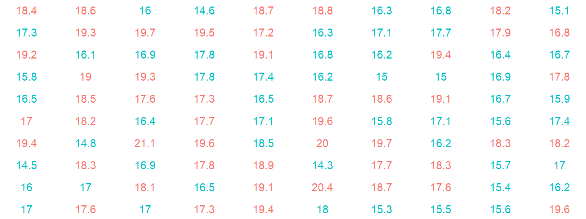
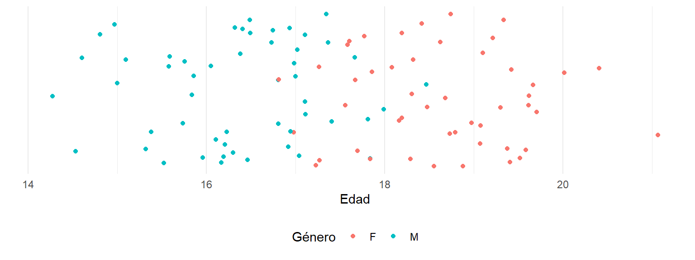
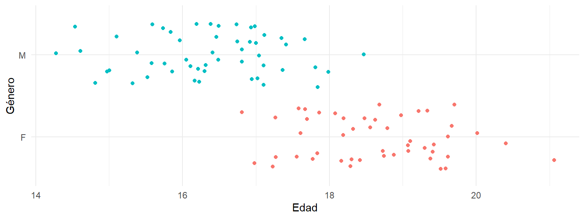

1 Preliminares
La estadística, en su concepción moderna, es el resultado de un extenso desarrollo histórico y epistemológico que refleja la evolución del pensamiento humano en su búsqueda de patrones y significados en la incertidumbre. Sus raíces se remontan a la antigüedad, cuando civilizaciones como las babilónicas y egipcias utilizaban conteos y registros para la administración y predicción. Sin embargo, fue en el Renacimiento, con la formalización del pensamiento probabilístico por figuras como Gerolamo Cardano y Pierre de Fermat, cuando emergieron las bases matemáticas que darían forma a su carácter científico.
La epistemología de la estadística comenzó a consolidarse en el siglo XVIII, con las contribuciones de pensadores como Thomas Bayes, quien introdujo un enfoque probabilístico basado en la actualización del conocimiento, y Carl Friedrich Gauss, cuya teoría de errores cimentó el papel de la estadística en la inferencia científica. A medida que el método científico se institucionalizaba, la estadística se convirtió en un vehículo para traducir fenómenos observables en explicaciones cuantitativas, adoptando principios de objetividad, reproducibilidad y rigor.
El siglo XX marcó una transformación paradigmática, impulsada por avances en la teoría de conjuntos, el cálculo y la computación. La estadística inferencial y la probabilidad frecuentista, promovidas por Ronald A. Fisher, Jerzy Neyman y Egon Pearson, coexistieron con enfoques bayesianos, destacando debates epistemológicos sobre la naturaleza del azar y la inferencia. Esta diversidad metodológica enriqueció su aplicabilidad, desde el diseño de experimentos hasta el análisis de sistemas complejos en las ciencias sociales.
Hoy, la estadística es no solo un instrumento técnico, sino también un lenguaje epistemológico que da forma a cómo entendemos la realidad. Su desarrollo histórico subraya la tensión entre el dato y la interpretación, entre el caos del mundo empírico y la búsqueda de orden intelectual.
1.1 La verdad y la objetividad
La necesidad de procesar información es inherente al ser humano, un reflejo de su insaciable curiosidad por comprender el mundo que lo rodea. En un universo complejo e incierto, la información se presenta como un recurso esencial para la supervivencia, la toma de decisiones y la construcción de conocimiento. Sin procesarla, los datos brutos carecen de significado; es mediante el análisis y la síntesis que transformamos fragmentos dispersos en narrativas coherentes que guían nuestra acción. Esta capacidad no solo nos define como especie, sino que también alimenta nuestra aspiración más profunda: la búsqueda de la verdad.
1.1.1 ¿Existe la verdad?
La existencia de la verdad es una cuestión filosófica que ha desafiado a pensadores desde tiempos antiguos. Para Platón, la verdad era una forma ideal, un conocimiento absoluto al que solo se accedía mediante la razón. En contraste, las tradiciones empiristas, como las de Aristóteles o Locke, vincularon la verdad con la experiencia y la observación. Sin embargo, estas concepciones comparten una premisa: que la verdad es algo objetivo, independiente del observador.
En un sentido práctico, la verdad parece manifestarse en dos planos: como correspondencia con la realidad y como coherencia lógica dentro de un sistema de pensamiento. La primera implica que una afirmación es verdadera si refleja fielmente un hecho, mientras que la segunda sugiere que la verdad puede ser relativa a los marcos epistemológicos que la sustentan. Esto lleva a una paradoja: aunque aspiramos a la objetividad, nuestra percepción de la verdad está inevitablemente condicionada por nuestra cultura, lenguaje y experiencia.
1.2 Verdad y objetividad en la modernidad
La modernidad abrazó un enfoque racionalista y científico de la verdad, fundado en la fe en el progreso y en la capacidad humana de descubrir leyes universales que rigen la naturaleza y la sociedad. Este paradigma, influido por el empirismo y el método científico, promovió una visión de la verdad como algo accesible a través del rigor metodológico y la acumulación de evidencias. La Revolución Científica y la Ilustración, con pensadores como Descartes, Kant y Newton, consolidaron esta noción, priorizando la objetividad y la replicabilidad como criterios de validez.
Sin embargo, esta confianza en la verdad objetiva también trajo tensiones. Por un lado, el poder del conocimiento científico revolucionó la tecnología, la medicina y la economía. Por otro, redujo la complejidad humana y social a ecuaciones y categorías simplificadas, marginando otras formas de saber, como las éticas, estéticas y espirituales. La modernidad trató la verdad como una meta absoluta, pero al hacerlo, a menudo ignoró las dimensiones subjetivas y plurales de la experiencia humana.
La objetividad en la modernidad se concibe como un ideal epistemológico central, que busca eliminar la influencia de valores, emociones o prejuicios individuales en la producción de conocimiento. Este concepto está profundamente enraizado en el contexto histórico, filosófico y científico de la modernidad, un período caracterizado por la confianza en la razón, el método científico y el progreso.
1.2.1 El surgimiento de la objetividad moderna
La modernidad, influenciada por la Ilustración y la Revolución Científica, estableció la objetividad como el estándar para alcanzar verdades universales. Filósofos como Descartes promovieron una visión racionalista en la que el pensamiento lógico y metódico podía superar las limitaciones de la percepción subjetiva. La objetividad se convirtió en un mecanismo para garantizar que el conocimiento no estuviera contaminado por creencias personales, ideologías o tradiciones.
En este contexto, la ciencia se posicionó como el paradigma del conocimiento objetivo. Galileo, Newton y otros pioneros de la ciencia moderna formularon leyes universales que prometían describir la naturaleza de manera imparcial. El método científico, con su énfasis en la observación sistemática, la experimentación controlada y la replicabilidad, se estableció como el camino hacia un conocimiento fiable y verificable.
1.2.2 Características de la objetividad en la modernidad
Universalidad: La objetividad buscaba verdades aplicables a todos los contextos, independientemente de las diferencias culturales, históricas o individuales. Por ejemplo, las leyes de la física se consideraron válidas tanto en Europa como en otras partes del mundo.
Neutralidad: La modernidad aspiraba a un conocimiento libre de intereses particulares, de manera que la investigación científica pudiera ser una empresa independiente de valores políticos, éticos o sociales.
Rigor metódico: La objetividad requería procedimientos estandarizados que redujeran al mínimo la influencia de sesgos personales. Esto incluía el uso de instrumentos de medición, controles experimentales y protocolos reproducibles.
Despersonalización: En aras de la objetividad, se promovió una separación entre el investigador y el objeto de estudio. El científico debía actuar como un observador distante, dejando a un lado emociones, creencias y deseos personales.
1.2.3 Críticas y tensiones
Aunque la objetividad en la modernidad permitió avances extraordinarios en ciencia y tecnología, también generó críticas y tensiones. Una de las principales críticas es que la objetividad moderna a menudo enmascara los contextos sociales, políticos y culturales que inevitablemente influyen en la producción de conocimiento. Por ejemplo, Donna Haraway argumenta que todo conocimiento es situado, es decir, que está condicionado por la perspectiva y el contexto del observador, incluso en disciplinas científicas.
Asimismo, la idea de neutralidad ha sido cuestionada. La investigación científica no está aislada de los intereses económicos y políticos: qué se investiga, cómo se financia y cómo se aplica el conocimiento son decisiones influenciadas por valores y estructuras de poder. En este sentido, la objetividad moderna ha sido vista como una aspiración más que como una realidad alcanzable.
La objetividad en la modernidad representó un ideal revolucionario que buscaba superar la subjetividad individual y alcanzar verdades universales mediante el rigor metodológico y la neutralidad. Aunque permitió el desarrollo de un conocimiento confiable y replicable, sus limitaciones y tensiones muestran que incluso los estándares más altos de objetividad no están exentos de condicionamientos humanos. Este reconocimiento no invalida su valor, sino que nos invita a reflexionar críticamente sobre cómo construimos conocimiento en contextos históricos y sociales específicos.
1.3 Verdad y objetividad en la postmodernidad
La postmodernidad desafió la narrrativa hegemónica de verdad universal, cuestionando la existencia misma de una verdad universal. En este contexto, pensadores como Michel Foucault, Jean-François Lyotard y Jacques Derrida argumentaron que lo que llamamos “verdad” es una construcción social, moldeada por relaciones de poder, discursos dominantes y contextos históricos. Según este enfoque, no hay una verdad única, sino una multiplicidad de verdades, cada una dependiente de los valores, intereses y perspectivas que la producen.
Este giro epistemológico desestabilizó las certezas modernas, abriendo espacio para voces antes excluidas y reconociendo la importancia de la narrativa, la identidad y la subjetividad. Sin embargo, también planteó un desafío: si toda verdad es relativa, ¿cómo distinguimos entre lo válido y lo falso? En la postmodernidad, la verdad se trata no como un punto fijo, sino como un proceso dinámico de negociación entre perspectivas, un diálogo interminable que refleja la diversidad y la complejidad de la experiencia humana.
La búsqueda de la verdad es tanto una necesidad como un desafío. Procesamos información para darle sentido al caos, pero nuestras herramientas y paradigmas siempre están limitados por el contexto histórico y cultural. La modernidad trató la verdad como algo que podía descubrirse y validarse de manera objetiva, mientras que la postmodernidad nos recuerda que nuestras nociones de verdad están intrínsecamente ligadas a nuestras perspectivas. En última instancia, procesar información y buscar la verdad son actos profundamente humanos, que reflejan no solo nuestra capacidad intelectual, sino también nuestra vulnerabilidad, creatividad y deseo de trascender.
La ciencia, en su esencia, se erige como un esfuerzo humano para interpretar el mundo, generando conocimiento estructurado que busca explicar fenómenos y resolver problemas. Para abordar cuestiones como el significado de la información, el carácter político de las ciencias, su función instrumental y la naturaleza de los modelos científicos, es necesario explorar sus fundamentos epistemológicos y sociales.
1.3.1 La Objetividad en la Postmodernidad
La postmodernidad cuestiona profundamente la noción de objetividad tal como fue concebida en la modernidad, socavando la idea de que es posible acceder a una verdad universal, imparcial y libre de influencias culturales o subjetivas. En lugar de considerar la objetividad como un estándar absoluto, la postmodernidad la percibe como una construcción social y cultural, moldeada por discursos, relaciones de poder y contextos históricos.
1.3.2 Críticas postmodernas a la objetividad
La verdad como construcción social: Filósofos postmodernos como Michel Foucault y Jacques Derrida argumentaron que lo que llamamos “verdad” es el resultado de prácticas discursivas y estructuras de poder. La objetividad, desde esta perspectiva, no es neutral, sino una herramienta utilizada para legitimar ciertos conocimientos y excluir otros. Por ejemplo, Foucault mostró cómo las instituciones científicas han sido históricamente influidas por intereses políticos y económicos, moldeando lo que se considera verdadero.
El rechazo a las narrativas universales: Jean-François Lyotard, en su obra La condición postmoderna, criticó las “metanarrativas” de la modernidad, como el progreso y la ciencia, que pretendían ofrecer explicaciones globales y objetivas de la realidad. Para Lyotard, la postmodernidad celebra las “micronarrativas”, perspectivas locales y situadas que reflejan la diversidad y la pluralidad del conocimiento humano.
El conocimiento situado: La feminista Donna Haraway introdujo el concepto de “conocimientos situados”, que sostiene que todo conocimiento está condicionado por la posición del sujeto que lo produce. Según Haraway, la objetividad debe entenderse no como una ausencia de perspectiva, sino como un reconocimiento crítico de las propias limitaciones y el contexto desde el cual se genera el conocimiento.
Relativismo y pluralismo: En la postmodernidad, la objetividad es reemplazada por una aceptación del relativismo y el pluralismo epistemológico. Esto no implica que todas las verdades sean iguales, sino que ninguna puede reclamar supremacía universal sin considerar su contexto. Por ejemplo, una investigación científica puede ser rigurosa dentro de su marco metodológico, pero su validez depende de los valores y presupuestos que subyacen a ese marco.
1.3.3 La objetividad como diálogo y negociación
En lugar de desechar por completo la idea de objetividad, la postmodernidad sugiere replantearla como un proceso dinámico de diálogo y negociación entre perspectivas diversas. Este enfoque reconoce que:
- No existe un punto de vista totalmente neutro, pero es posible alcanzar consensos provisionales basados en la crítica y el intercambio.
- La objetividad no elimina los sesgos, pero puede gestionarlos mediante la transparencia y la reflexividad.
- El conocimiento es siempre parcial, pero puede ser útil y significativo si se reconoce su contexto y sus límites.
1.3.4 Tensiones y desafíos
La crítica postmoderna a la objetividad ha abierto nuevas posibilidades para incluir voces marginadas y valorar diferentes formas de conocimiento. Sin embargo, también plantea desafíos:
- ¿Cómo evaluamos la validez de diferentes perspectivas sin recurrir a criterios universales?
- ¿Cómo evitamos el riesgo del relativismo extremo, en el que todo conocimiento tiene el mismo peso, independientemente de su rigor o evidencia?
- ¿Cómo reconciliamos la diversidad de narrativas con la necesidad de acciones colectivas basadas en hechos comunes, como en el caso del cambio climático?
La objetividad en la postmodernidad no es un ideal fijo, sino una práctica crítica y reflexiva que valora la pluralidad de perspectivas sin renunciar a la búsqueda de consensos. En lugar de perseguir una verdad absoluta e independiente, la postmodernidad nos invita a reconocer la complejidad, contingencia y contextualidad del conocimiento. Este enfoque no rechaza la objetividad, sino que la transforma en una herramienta más humana y adaptable para comprender y actuar en un mundo diverso y en constante cambio.
1.4 La información
La información puede definirse como el conjunto de datos organizados y contextualizados que transmiten significado. No es solo un registro de hechos aislados, sino una estructura que conecta elementos para generar conocimiento. Claude Shannon, en su teoría de la información, la describió como una medida de reducción de incertidumbre en un sistema, enfatizando su dimensión cuantitativa.
Sin embargo, la información también posee una dimensión cualitativa: depende de quién la interpreta, del contexto en el que se utiliza y del propósito que sirve. Es materia prima para la construcción del conocimiento, el puente entre lo desconocido y lo entendible, un recurso que define no solo cómo comprendemos el mundo, sino cómo lo transformamos.
1.4.1 Las ciencias son políticas
Las ciencias no existen en un vacío neutral; están inmersas en sistemas sociales, económicos y culturales que las moldean y que, a su vez, son influenciados por ellas. Esta relación las convierte en intrínsecamente políticas. Por “políticas”, no solo se entiende la intervención de intereses gubernamentales o ideológicos, sino también la dinámica de poder que define qué se investiga, quién financia dicha investigación y cómo se aplica su conocimiento.
Por ejemplo, los avances en biotecnología pueden abordar problemas de hambre global, pero también generar desigualdades si los beneficios se concentran en sectores privilegiados. El cambio climático, otro ejemplo, es un campo donde la ciencia enfrenta intereses corporativos y políticos que intentan influir en sus hallazgos y narrativas. En este sentido, las ciencias reflejan no solo la búsqueda de la verdad, sino también los valores y prioridades de la sociedad que las produce.
1.4.2 Las ciencias son herramientas
Si bien las ciencias están impregnadas de políticas y valores, también son herramientas esenciales para entender y actuar sobre el mundo. Su capacidad de generar conocimiento riguroso permite desarrollar tecnologías, formular políticas públicas efectivas y abordar desafíos globales. En este sentido, las ciencias son instrumentos al servicio de la humanidad, aunque la dirección de su uso depende de las intenciones humanas.
Por ejemplo, las ciencias médicas han permitido erradicar enfermedades y mejorar la calidad de vida, mientras que la física y la ingeniería han desarrollado tecnologías que revolucionan las comunicaciones, la energía y el transporte. Sin embargo, como herramientas, las ciencias son éticamente neutras: su impacto depende de cómo las aplicamos y con qué fines.
1.4.3 ¿Qué es un modelo científico?
Un modelo científico es una representación simplificada de un fenómeno complejo que permite comprender, predecir y manipular su comportamiento. Los modelos son esenciales en la ciencia porque nos ofrecen una manera de explorar aspectos de la realidad que no pueden observarse directamente o que son demasiado complicados para abordarse en su totalidad.
Por ejemplo, en la meteorología, los modelos climáticos simulan sistemas atmosféricos para prever patrones de lluvia y temperatura. En la física, los modelos cuánticos explican el comportamiento de partículas subatómicas, mientras que en las ciencias sociales, los modelos económicos intentan captar las dinámicas de mercado.
Sin embargo, todo modelo científico es una aproximación, no una réplica exacta de la realidad. Su valor radica en su utilidad, no en su perfección. Como dijo el estadístico George Box, “todos los modelos son erróneos, pero algunos son útiles”. Esta afirmación subraya que los modelos no son verdades absolutas, sino herramientas conceptuales diseñadas para guiar nuestro entendimiento y acción.
1.4.4 Información y ciencia
La información, las ciencias y los modelos científicos son elementos interdependientes que estructuran nuestra forma de entender y actuar sobre el mundo. La información es la base del conocimiento; las ciencias son tanto herramientas como reflejo de las dinámicas políticas que las atraviesan; y los modelos científicos son construcciones que hacen posible desentrañar la complejidad de la realidad. Juntos, estos conceptos no solo iluminan el mundo, sino también nuestras propias limitaciones y posibilidades como seres humanos en busca de sentido.
La replicabilidad es un principio fundamental en la ciencia, que garantiza la validez y la fiabilidad de los hallazgos científicos. Consiste en la capacidad de repetir un experimento o estudio bajo condiciones similares y obtener resultados consistentes. Este proceso actúa como un mecanismo de control que permite verificar si los descubrimientos están libres de errores, sesgos o influencias externas. En disciplinas empíricas, la replicabilidad refuerza la confianza en el conocimiento generado, estableciendo estándares que distinguen a la ciencia de otras formas de comprensión, como las creencias o la opinión. Es, en esencia, la piedra angular que sostiene la credibilidad del método científico.
Sin embargo, en la práctica, la replicabilidad enfrenta desafíos significativos. Factores como la falta de transparencia en los métodos, la presión por publicar resultados novedosos y las limitaciones en la disponibilidad de recursos dificultan la reproducción de estudios. En años recientes, varias disciplinas, desde la psicología hasta la biomedicina, han experimentado lo que se denomina la “crisis de replicabilidad”, donde numerosos resultados publicados no pueden ser replicados por otros investigadores. Esta situación ha llevado a un llamado global para adoptar prácticas más rigurosas, como el uso de pre-registros, la publicación de datos abiertos y la implementación de análisis reproducibles, que refuercen la integridad de la ciencia y aseguren que el conocimiento generado sea verdaderamente confiable.
Lo objetivo no existe. Tenemos conocimiento más subjetivo y menos subjetivo. El conocimiento menos subjetivo es el conocimiento científico, porque se basa en lo replicable.
1.5 Definiciones
La estadística, como disciplina, se basa en el análisis sistemático de información cuantitativa o cualitativa para describir, interpretar y predecir fenómenos. Tres conceptos clave estructuran este análisis: los datos, las variables y los individuos. Cada uno cumple un rol específico, interconectado y esencial en el proceso de generación de conocimiento.
1.5.1 ¿Qué son los datos?
Los datos son el registro de observaciones, medidas o respuestas recopiladas sobre un fenómeno o población de interés. Constituyen la materia prima del análisis estadístico y pueden ser numéricos (cuantitativos) o descriptivos (cualitativos). Los datos por sí mismos son neutros; adquieren significado solo cuando se contextualizan y se analizan en relación con una pregunta o hipótesis.
Por ejemplo, el registro de temperaturas diarias en una ciudad o las respuestas a una encuesta sobre hábitos de consumo son datos. Estos sirven como base para identificar patrones, realizar comparaciones y construir modelos que representen aspectos de la realidad.
1.5.2 ¿Qué son las variables?
Las variables son características o atributos que pueden tomar diferentes valores entre los individuos de un conjunto o población. Representan las dimensiones específicas que se desean observar o analizar en un estudio.
Las variables se clasifican según su naturaleza:
Cuantitativas: Representan cantidades medibles, como la altura, el peso o los ingresos.
- Discretas: Toman valores específicos, como el número de hijos en una familia.
- Continuas: Pueden tomar cualquier valor dentro de un rango, como la temperatura o el tiempo.
- Discretas: Toman valores específicos, como el número de hijos en una familia.
Cualitativas: Representan categorías o cualidades, como el género, la nacionalidad o el color de los ojos.
- Nominales: No tienen un orden intrínseco, como el estado civil.
- Ordinales: Poseen un orden, como los niveles educativos.
- Nominales: No tienen un orden intrínseco, como el estado civil.
Las variables permiten organizar y estructurar los datos para realizar análisis significativos. Por ejemplo, en un estudio sobre la educación, “nivel educativo” podría ser una variable cualitativa ordinal, mientras que “puntaje en una prueba” sería cuantitativa continua.
1.5.3 ¿Qué son los individuos?
Los individuos son las unidades básicas de observación o análisis dentro de una población. Pueden ser personas, objetos, organismos, eventos o entidades, dependiendo del contexto del estudio.
Por ejemplo:
- En un censo poblacional, los individuos son las personas encuestadas.
- En un experimento agrícola, los individuos podrían ser plantas o parcelas de tierra.
- En un análisis de mercado, los individuos son los productos o consumidores.
Cada individuo se caracteriza por tener valores específicos para las variables consideradas en el estudio. Por ejemplo, en una encuesta sobre hábitos alimenticios, un individuo (una persona) podría tener valores como edad = 30 años, género = femenino, y frecuencia de consumo de frutas = 5 veces por semana.
1.6 Primer arcercamiento: ¿Cómo son los datos?
En el panorama actual, donde la información fluye en volúmenes masivos y de manera constante, el análisis de datos se ha convertido en un componente esencial para comprender fenómenos sociales. Sin embargo, en el ámbito de las ciencias sociales, persiste una brecha significativa entre las competencias cuantitativas necesarias para el análisis de datos y las herramientas empleadas por los investigadores. Esta brecha no solo es tecnológica, sino también epistemológica y cultural, lo que genera una resistencia hacia el desarrollo de habilidades cuantitativas.
El uso de programación en el análisis de datos es frecuentemente percibido como un campo exclusivo de disciplinas STEM (ciencia, tecnología, ingeniería y matemáticas). Esta percepción puede desmotivar a los científicos sociales, quienes a menudo ven estas competencias como ajenas a sus intereses y tradiciones. Sin embargo, esta distancia es un obstáculo tanto para la investigación académica como para el desarrollo profesional en un mundo donde las decisiones basadas en datos son cada vez más frecuentes.
A medida que las metodologías de análisis avanzan, la integración de enfoques cuantitativos se vuelve inevitable. La combinación de grandes volúmenes de datos (big data), tecnologías accesibles y herramientas estadísticas ha revolucionado la forma en que se abordan preguntas de investigación. Desde el análisis de redes sociales hasta el estudio de comportamientos colectivos, las ciencias sociales dependen cada vez más de métodos que requieren un manejo competente de datos y software especializado.
Sin embargo, el uso de herramientas básicas, como hojas de cálculo, limita el alcance y la profundidad de los análisis. Aunque son útiles en los primeros pasos, carecen de la capacidad para manejar datasets complejos, realizar análisis avanzados o automatizar procesos, lo que resulta en una dependencia de enfoques manuales y un posible sesgo en los resultados.
La resistencia al desarrollo de competencias cuantitativas no es solo un problema de acceso a tecnología, sino también de cultura académica. Durante décadas, las ciencias sociales han privilegiado enfoques cualitativos y narrativos, subestimando las posibilidades de las herramientas cuantitativas para enriquecer la comprensión de los fenómenos sociales. Esta resistencia cultural se traduce en una falta de programas educativos orientados al análisis de datos en ciencias sociales, perpetuando la brecha tecnológica.
Reconstruir esta relación requiere un cambio de perspectiva en varios niveles:
Formación interdisciplinaria: Incorporar competencias de programación, análisis de datos y estadística en la formación de los científicos sociales. Esto no implica abandonar los enfoques cualitativos, sino complementarlos con habilidades cuantitativas que amplíen su capacidad de análisis.
Acceso a herramientas accesibles y avanzadas: Herramientas como R, Python y software estadístico especializado permiten a los científicos sociales realizar análisis más complejos sin depender de costosos recursos. Estas herramientas deben integrarse en los currículos de las ciencias sociales, acompañadas de una pedagogía que enfatice su utilidad.
Cambio de mentalidad hacia los datos: Los datos no deben ser vistos solo como números, sino como representaciones de fenómenos humanos y sociales. Este enfoque humanista puede ayudar a reducir la distancia entre el científico social y los métodos cuantitativos, reconociendo que los datos también cuentan historias y reflejan dinámicas sociales significativas.
Enfoque en la relevancia profesional: Más allá de la academia, el análisis de datos es una habilidad esencial en sectores como el marketing, la política, la planificación urbana y el desarrollo comunitario. Los científicos sociales con competencias cuantitativas tienen una ventaja competitiva en un mercado laboral que valora cada vez más las decisiones basadas en datos.
Un primer acercamiento a los datos puede verse de esta manera. Para nuestro ejemplo vamos a pensar en un conjunto de 100 personas que recién ingresan a una universidad en Bogotá en 1990, indagamos el género y la edad de cada una de ellas. Estos datos se pueden ver de esta forma.
Esta forma de ver los datos no nos entrega una información fácil de comprender. Por esta razón, la visualización de datos es importante en el análisis estadístico. Para comprender mejor, abordemos primero la edad. Podemos ver los datos de la edad como puntos en el eje horizontal.

Esta visualización nos entrega un poco más de información, podemos entender el valor más alto, el más bajo, y en general el espacio que ocupan los datos en el eje horizontal. Los datos que ocupan mucho espacio se llaman dispersos, si el espacio es poco, se llaman concentrados. Más adelante veremos medidas para esta característica y profundizaremos al respecto. Para verlos mejor, podemos diseminarlos verticalmente. Este es un truco que ayuda a comprender mejor los datos, impidiendo que se sobrepongan los puntos. Para esto se agrega ruido en el eje vertical, pero este ruido no tiene significado.

Podemos trazar líneas imaginarias para entender mejor los datos. Las primeras líneas imaginarias son el máximo y el mínimo. Al trazar estas líneas podemos contener el 100% de los datos. Es muy fácil.

divide los datos en dos conjuntos de igual magnitud. A la derecha de la línea se encuentra la misma cantidad de datos que a la izquierda. Esta línea se encuentra en un punto muy importante del eje horizontal, este valor se denomina la mediana. La mediana de un conjunto de datos es el valor que divide a los datos en dos conjuntos de igual magnitud.

Usando más líneas imaginarias podemos dividirlos en cuatro partes iguales.Estas líneas imaginarias distribuyen los datos de la edad en cuatro conjuntos de igual magnitud. Al igual que la mediana, estos valores son importantes. Se denominan cuartiles. En cada uno de los conjuntos resultantes, se encuentra el 25% de los datos.
Entonces, funciona de la siguiente forma: el cuartil cero \((Q_0)\) corresponde al valor mínimo; el primer cuartil \((Q_1)\) separa el 25% de los datos; el segundo cuartil \((Q_2)\) coincide con la mediana, porque separa el 50% de los datos; el tercer cuartil \((Q_3)\) separa el 75% de los datos; y el cuarto cuartil \((Q_4)\) coincide con el máximo de los datos.
Estos cuartiles en general no tienen la misma distancia entre ellos. Lo usual es que se ubiquen en distancias diferentes según los datos.
Estas líneas imaginarias que son importantes, se pueden consolidar en un solo gráfico, que se denomina gráfico de caja y bigotes. Este gráfico está conformado por la mediana y los cuartiles. Este es un gráfico escencial en el análisis de datos y lo vamos a ver en muchas investigaciones.
Este gráfico tiene un cambio con respecto a la construcción anterior: aquí se utilizan un máximo teórico y un mínimo teórico. Esto se realiza con el fin de identificar visualmente los datos de los extremos.
Abordemos el género ahora. Podemos usar el color para identificar el género en los datos. Realizamos el mismo procedimiento añadiendo el color del género. En este caso, ya podemos identificar la tendencia, de puntos rojos más a la derecha y azules a la izquierda.

Organizamos los datos verticalemnte por género. Esto os permite tenre dos nubes de puntos y facilita la interpretación, ahora es más notoria la tendencia hacia a la derecha y hacia la izquerda de los puntos rojos y azules respectivamente.

Al elaborar una gráfico de caja para cada género es posible ver la tendencia. Esta característica que no resultaba fácil de identificar en el primer gráfico, ahora es muy notoria. Las medianas y los cuartiles de los datos agrupados por género difieren. Esto nos permite obtener hipótesis que podremos comprobar más adelante.

1.7 Tipos de datos
El análisis de datos es la columna vertebral de la investigación científica y social, donde se busca extraer patrones, relaciones y tendencias a partir de observaciones sistemáticas. Los datos son el insumo principal de este análisis, y comprender sus diferentes tipos y propiedades es esencial para elegir las metodologías y enfoques más adecuados. A continuación, se profundiza en los conceptos clave presentados, estructurándolos en torno a su relevancia en la investigación.
1.7.1 Tendencias y patrones globales
Las tendencias representan comportamientos agregados que emergen de las características individuales de una población. A diferencia de una afirmación puntual o específica sobre un individuo, las tendencias buscan capturar patrones generalizables que describen cómo un grupo, en promedio, se comporta respecto a una variable o conjunto de variables. Este enfoque es crucial en disciplinas como la economía, la sociología y la epidemiología, donde los fenómenos globales informan decisiones de política pública o estrategias organizacionales.
Por ejemplo, al analizar los hábitos de consumo en un país, una tendencia podría revelar que el promedio de gasto en entretenimiento es más alto en grupos jóvenes que en mayores de 50 años. Sin embargo, esta tendencia no asegura que todos los jóvenes gasten más en entretenimiento, sino que describe un comportamiento predominante dentro de la población estudiada. Este desajuste entre las tendencias y los comportamientos individuales resalta la importancia de interpretar los datos globales como representativos, pero no absolutos.
1.7.2 Unidades de análisis
Los individuos son las unidades básicas de observación en cualquier estudio. Representan los elementos de la población objeto de análisis, que pueden ser personas, empresas, organismos o eventos, dependiendo del contexto de la investigación. En términos analíticos, los individuos son la fuente de datos a partir de los cuales se construyen modelos, hipótesis y conclusiones.
La elección de los individuos y su caracterización es clave, ya que determina la validez y generalizabilidad de los resultados. Por ejemplo, en un estudio sobre hábitos alimenticios, seleccionar individuos representativos de diferentes regiones y estratos socioeconómicos garantizará que las conclusiones puedan extrapolarse al resto de la población. Este concepto está íntimamente ligado al diseño del muestreo y la operacionalización de las variables.
1.8 Variables: Características observables y medibles
Las variables son los rasgos o atributos que describen a los individuos y sobre los cuales se recopila información. Funcionan como el puente entre las observaciones individuales y los análisis que buscan generalizar comportamientos.
1.8.1 Clasificación de las variables
Cuantitativas: Estas variables representan magnitudes numéricas que se pueden medir. Por otro lado, las variables numéricas o cuantitativas permiten medir y realizar cálculos matemáticos. La distinción entre discretas y continuas tiene implicaciones metodológicas: mientras que las discretas suelen analizarse con conteos y proporciones, las continuas requieren herramientas que consideren distribuciones más complejas. Estas variables son esenciales en áreas como la economía y la biología, donde los fenómenos físicos y financieros se representan mediante medidas precisas.
Discretas: Toman valores finitos o contables, como el número de hijos en una familia.
Continuas: Admiten infinitos valores dentro de un rango, como la temperatura medida en grados Celsius.
Categóricas: Representan atributos o categorías que no necesariamente poseen un valor numérico. Las variables categóricas agrupan a los individuos en categorías o clases. Su análisis permite identificar frecuencias y distribuciones dentro de la población. Por ejemplo, analizar la afiliación política de un grupo puede mostrar que el 40% prefiere un partido A, mientras que el 30% opta por un partido B. Este tipo de variable es fundamental en estudios demográficos y de percepción social, donde las características subjetivas y de identidad son el foco principal.
- Nominales: Categorías sin orden intrínseco, como el color de los ojos o el estado civil.
- Ordinales: Categorías con un orden lógico, como los niveles educativos o el nivel de satisfacción.
- Nominales: Categorías sin orden intrínseco, como el color de los ojos o el estado civil.
1.8.2 Medición: Asignación de valores a las observaciones
La medición es el proceso mediante el cual las características de los individuos se transforman en datos observables y cuantificables. Este proceso debe ser riguroso y consistente, basado en reglas preestablecidas que garanticen la comparabilidad y la reproducibilidad de los resultados.
Por ejemplo, en un estudio sobre bienestar subjetivo, es esencial que las escalas utilizadas para medir “felicidad” o “satisfacción” estén claramente definidas, estandarizadas y validadas. Una medición precisa y confiable no solo facilita el análisis estadístico, sino que también asegura que las conclusiones se basen en datos sólidos y significativos.
Los tipos de datos, las variables y las técnicas de medición constituyen los elementos centrales del análisis en cualquier disciplina. Entender cómo se relacionan las tendencias globales con las características individuales, cómo se seleccionan y clasifican las variables, y cómo se mide con precisión cada atributo son habilidades fundamentales para el análisis riguroso. Este marco integrado no solo es esencial para la investigación académica, sino también para la toma de decisiones informadas en contextos profesionales y sociales. La reconceptualización del trabajo con datos requiere, por tanto, no solo conocimiento técnico, sino también una reflexión crítica sobre las implicaciones de cómo estructuramos y utilizamos la información.